KI og maskinlæring for jurister
JUS 12 mai
eide.ai
NHO
Velkommen
- Maskinlæring for jurister
- Tre bolker
- Live-kurs, spør underveis
Hvem er vi (Siv Henriksen)
Jurist innenfor personvern, teknologi og AI
- 2025 - NHO
- 2022-2025 Oda
- 2016-2022 Schibsted
- 2010-2016 Equinor
Hvem er vi (Simen Eide)?
“Algoritmemaker”
- Finansiell risikomodellering
- 8 år i FINN/Schibsted - anbefalingssystemer + AI enablement
- PhD i AI (UiO) - anbefalinger, språkmodeller og usikkerhet
- I dag: Freelance (eide.ai)
Program
- Introduksjon
- Bolk I: Hva er AI?
- Pause
- Bolk II: Teknologi møter juss
- Pause
- Bolk III: Generativ AI og språkmodeller
- + caseoppgave
Hva er AI?
Bolk 1
AI er overalt
- Sam Altman
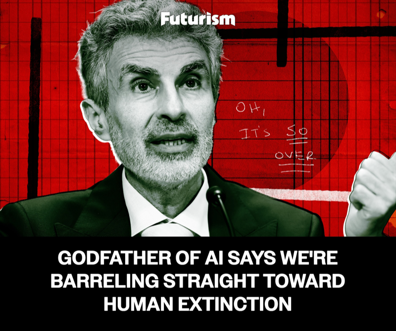
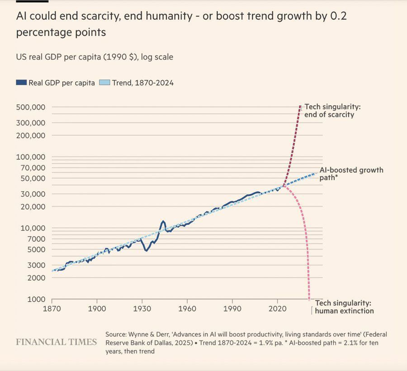
Hva får dere ut av bolk 1?
- Mental modell av hva ML faktisk er
- Knagger for juridiske vurderinger
- Vokabular for å snakke med utviklere
- “ML er ikke magi”
Statistikk, ML, AI, KI?!

- Kjært barn, mange navn
- Lære (og bruke) en modell av verden ved å bruke data
- Fokus her: probabilistiske modeller
Tre business-cases
Vi skal følge tre organisasjoner
Rekrutteringsbyrå
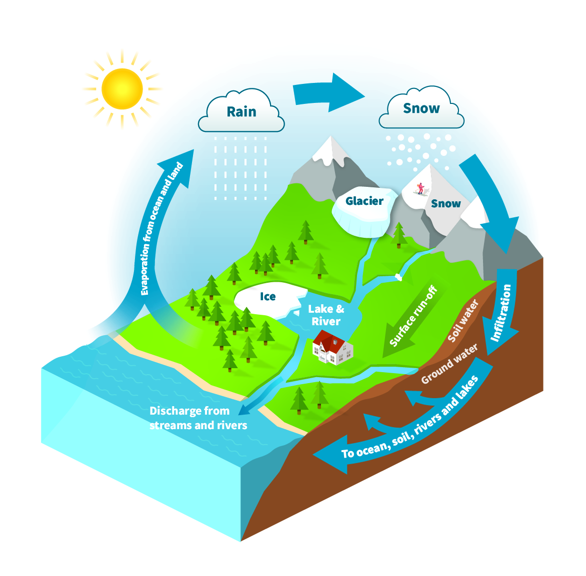
NVE
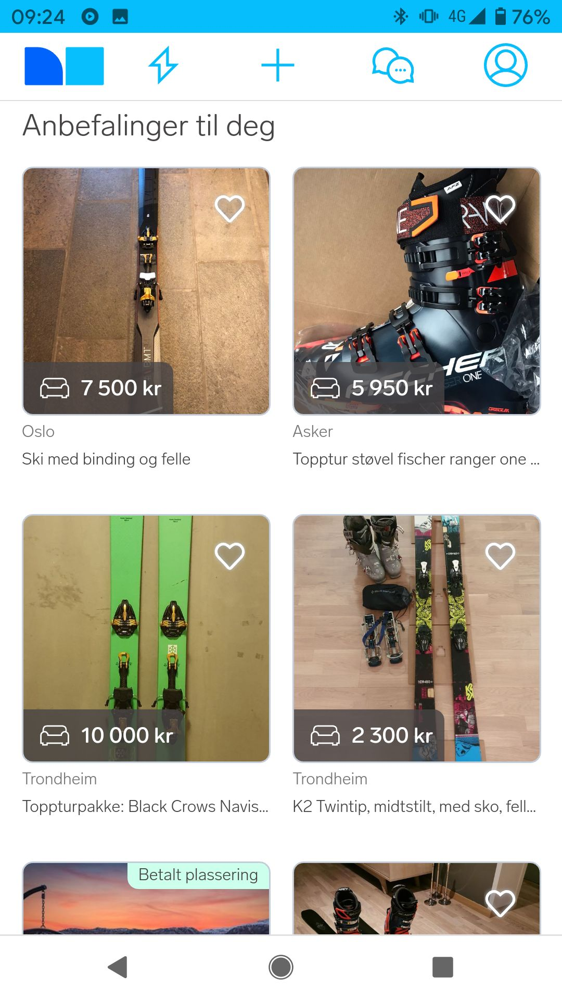
Nettplattform
Gitt:
- jobbeskrivelse
- CV med personalia
- vassdrag
- snømengde i fjellet
- brukerens klikkhistorie
- annonser/filmer
Skal vi:
ansette personen?
melde flomvarsel?
anbefale denne annonsen/filmen?
The Algorithm
The Algorithm
- Data - hva har vi lært av?
- Modell - hva slags funksjon beskriver dataen?
- Trening - hvordan finner vi parametrene?
- Handling - hva GJØR vi med prediksjonen?
Data
Høna eller egget?
- Data og modell henger sammen
- Du kan ikke samle data uten å vite hva du vil modellere
- Du kan ikke bygge modell uten å vite hva slags data du har ## Et datapunkt = en rad
| Fornavn | Alder | Kjønn | Utdanning | Erfaring | Ansatt? |
|---|---|---|---|---|---|
| Erik | 32 | M | NTNU | 5 år | ja |
| Ingrid | 28 | K | UiO | 2 år | nei |
| Lars | 45 | M | BI | 15 år | ja |
| Kari | 24 | K | HiOA | 0 år | nei |
| Magnus | 38 | M | NHH | 8 år | ja |
| ... | ... | ... | ... | ... | ... |
| x (features) | y (label) | ||||
Tenk rader i regneark
Ønsker å finne sannsynligheten for ansettelse gitt CV: \[ P(\textit{ansatt}=\textit{ja} | \textit{alder, utdanning, erfaring)} \]
Trenger uavhengig og identisk distribuerte eksempler
- “Mange like eksempler som ikke påvirker hverandre”
Tips: Ikke se veldig nøye på innhold i dataene ## Klassifisering eller regresjon?
Klassifisering: modellere en kategori
- Ansatt / ikke ansatt
- Hvilken film en person vil se
Regresjon: modellere et kontinuerlig tall
- Vannføring i elv
- Høyden på en person
Regresjon: NVE-flomvarsel
| Dato | Nedbør | Snømengde | Temperatur | Gårsdagens vannføring | Vannføring (m³/s) |
|---|---|---|---|---|---|
| 1. mai | 12 mm | 80 cm | 5°C | ? | 45 |
| 2. mai | 25 mm | 75 cm | 8°C | 45 | 78 |
| 3. mai | 40 mm | 60 cm | 12°C | 78 | 145 |
| 4. mai | 8 mm | 55 cm | 10°C | 145 | 112 |
| ... | ... | ... | ... | ... | ... |
| x (features) | y (label) | ||||
- Sannsynlighet for intervaller
\[ P(25 < y <26 | \textit{dato, nedbør, snømengde, temp}) \]
- Krever også mange like eksempler
- Her en tidsserie, egentlig bare ètt eksempel
- Løsning: vi legger til gårsdagens vannføring på dagens rad. Antar at de er uavhengig nå
Anbefalingsmotor
| Bruker-id | Siste sette filmer | Neste film |
|---|---|---|
| u_001 | Star Wars, Interstellar, Arrival | Dune 2 |
| u_002 | Friends, The Office, Brooklyn 99 | Seinfeld |
| u_003 | Dune, Blade Runner 2049, Tenet | Oppenheimer |
| u_004 | Bridgerton, The Crown, Downton Abbey | Pride & Prejudice |
| u_005 | Avengers, Thor, Iron Man | Spider-Man |
| ... | ... | ... |
| x (features) | y (label) | |
- Hver rad = én bruker med klikkhistorikk
- Klassifisering: hvilken film blir neste?
- y er kategorisk - én av mange mulige filmer
Modell
Hvordan henger CV sammen med ansettelse?
\[P(\text{ansatt} = \text{ja} \mid \text{erfaring} = 5\text{år}) = 0.71\]
Sannsynlighetsfunksjonen
- Gitt et sett med parametere \(\theta\)
- Sannsynligheten for å observere alle CV-ene og utfallene i datasettet vårt
\[L(\theta) = P(\text{ansatt}=\text{ja} \mid \text{erfaring}=5\text{år};\, \theta) \cdot P(\text{ansatt}=\text{nei} \mid \text{erfaring}=2\text{år};\, \theta) \ldots\]
\[= 0.7 \cdot 0.65 \ldots = 0.00234\]
Hva modellerer vi egentlig?
Rekruttering
Rekruttererens beslutningsprosess
NVE
Vannføring i elv gitt vær og vind
Nettplattform
Brukernes klikkevaner
Men ikke:
Rekruttering
Hvilken kandidat som er best til jobben
NVE
En fysisk lov som er korrekt
Nettplattform
Hvilken film som er yndlingsfilmen til brukeren
En modell er en forenklet beskrivelse av virkeligheten
“All models are wrong, but some are useful.”
— George Box, statistiker (1976)
NVE: vannføring som funksjon av temperatur
Data: historiske dager med temperatur og vannføring
Modell: en kurve med parametere som forsøker å fange formen
Modellen er deskriptiv: den beskriver hva som er i dataen, ikke hva vi bør gjøre
Modellkompleksitet
\(y = ax + b\)
2 parametere
\(y = ax^2 + bx + c\)
3 parametere
\(y = ax^3 + bx^2 + cx + d\)
4 parametere
\(y = a \cdot t^3 + b \cdot t^2 + c \cdot t + d \cdot n + e\)
5 parametere
stable mange lag → mange parametere
~51 params (GPT-5: 1000+ mrd)
Trening
data + modell
Modell: en familie av mulige kurver
Alle samme form (kubisk), men med ulike parametere
+ Data: observerte målinger
= Trening: velg den ene kurven som passer best
- Gjør dette ved å finne parametere \(\theta\) som gir høyest sannsynlighet for å se dataene vi har
- "Maximum likelihood"
- Bayesiansk alternativ: Hvilke parametere er sannsynlig gitt de dataene vi har sett?
- Gir usikkerhet i vannføring
Overfitting
Problem: for fleksibel modell går gjennom alle treningspunkter
→ fanger støy, ikke struktur
Løsning: valideringsdata
Hold tilbake observasjoner modellen ikke får se under trening
| Modell | Trening | Validering |
|---|---|---|
| ● God (kubisk) | høy | høy |
| ● Overfit | perfekt | lav |
Handling
(Ingen grunn til å lage modeller som ikke fører til en handling)
Hva er en handling?
Hvem kaller vi inn?
Dimensjonere demning?
I hvilken rekkefølge?
Rekruttering
Modellen gav oss en ansettelsessannsynlighet for alle søkere - hva nå?
| Kandidat | Erfaring | Utdanning | P(ansatt) |
|---|---|---|---|
| Erik | 5 år | NTNU | 0.71 |
| Ingrid | 2 år | UiO | 0.31 |
| Lars | 15 år | BI | 0.92 |
| Kari | 0 år | HiOA | 0.18 |
| Magnus | 8 år | NHH | 0.85 |
| Sara | 7 år | UiO | 0.43 |
| Petter | 3 år | NTNU | 0.62 |
| Hanne | 12 år | NHH | 0.51 |
Bare en kolonne med prediksjoner, ikke noen handling
Argmax: Ansett den modellen er mest sikker på
- Riktig hvis du kun kan gjøre èn ting
- Noen som ser problemer her?
- Vi modellerer tidligere rekrutterere
- Er det en god representasjon på hva som er riktig?
- Hva om modellen tar feil eller er usikker? Ingen utforskning
- Topp-4 er alle menn
- Er dataene reprentativ?
- Er modellen feil?
- Er det allikevel feil å sortere slik? (etikk, lover og regler)
- Vi modellerer tidligere rekrutterere
| Kandidat | Erfaring | Utdanning | P(ansatt) |
|---|---|---|---|
| Lars ← | 15 år | BI | 0.92 |
| Magnus | 8 år | NHH | 0.85 |
| Erik | 5 år | NTNU | 0.71 |
| Petter | 3 år | NTNU | 0.62 |
| Hanne | 12 år | NHH | 0.51 |
| Sara | 7 år | UiO | 0.43 |
| Ingrid | 2 år | UiO | 0.31 |
| Kari | 0 år | HiOA | 0.18 |
Andre handlinger
Top-K og vurder
Plukk K beste, la mennesker bestemme videre
- Lars (0.92)
- Magnus (0.85)
- Erik (0.71)
- Petter, Hanne, Sara, Ingrid, Kari
Threshold: alle over en grense
Vurder alle med P(ansatt) > 0.5
- Lars, Magnus, Erik, Petter, Hanne
- Sara, Ingrid, Kari (under 0.5)
Exploration
Inkluder bevisst noen usikre - lær om "nei"-gruppen
- Lars, Magnus (top)
- Sara, Kari (utforsk)
Kjønnsbalanse
Plukk topp-2 fra hver gruppe
- Lars, Magnus (menn)
- Hanne, Sara (kvinner)
Feil vi kan gjøre
Feedback loop: trene modell på data generert av modell
- Vi bruker recruitAI i ett år
- AI prioriterer topp 10, menneske vurderer
- Så skal vi trene på nytt. Tut og kjør?
- Det vi modellerer er nå noe annet:
- Før: menneske vurderte alle søknader
- Nå: modell vurderer alle, menneske ser bare toppen
Vi modellerer en annen prosess: Får bare feedback fra topplista men modellen tror den får vurdering på “hele”
Også et stort problem i anbefalingssystemer
- Modellene antar brukeren vurderer alle filmer/annonser,
- I realiteten ser brukeren bare toppen.
- Skaper popularitetsbias. (Eide et al. 2022)
Hvor feiler vi i de fire stegene?
- Data - det vi lærer fra
- Data er ikke representativt for det vi tror det representerer i modellen
- Modell - strukturen til verden
- Feil beskrivelse av verden
- Modellen kommuniserer ikke usikkerhet
- Trening - hvordan finner vi parametrene?
- Feil/dårlig optimering, overfitting
- Handling - hva GJØR vi med beskrivelsen av verden?
- Feil bruk
- Uetisk/ulovlig bruk
Hvor skal vi de-biase?
- Feilen skjer som oftest når vi gjør en handling basert på feil tolkning av hva modellen gjør
- Data behøver ikke være 100% korrekt så lenge vi har en modell som kan håndtere det
Anbefaling
- Hold modell og trening deskriptiv, endre handling
- Da er valget synlig og inspiserbart
- “Vekt opp kvinner 20% i techjobber”
- “Ikke anbefal kategori våpen”
Slippery slope
- I praksis “tukler” folk også med data og modell
- (sampler opp kvinner i søknadsprosess)
- Det fungerer teknisk
- Men: det skjuler valget du faktisk gjør
Hjertesukk: Kvalitet kommer fra kvantitet (og iterasjon)
- Keramikklæreren (Art & Fear, 1993)
- Medisinsk utstyr
- Forretningskritiske prosesser
- Vi må iterere mange ganger for å få noe perfekt
- Risikoaversjon ødelegger stopper innovasjon
- Da blir produktet dårligere og biasen vokser i det skjulte over tid
Bolk 2
Placeholder
Bolk 3: Generativ AI og språkmodeller
"DET ER NÅ DET SKJER! Er det ikke, Simen?"
"Slapp av. Det er bare transformere fra 2017 med mer data. Imponerende forskning og lovende empirisk, men... [blablabla]"
"DET ER NÅ DET SKJER!!!"
Hva har skjedd?
- Software-aksjer faller når AI-selskaper kunngjør produkter
- Før 2026: Føltes som effektiv “auto-complete”
- I 2026: Skikkelige utviklere skriver ikke kode
- Faktisk nyttige
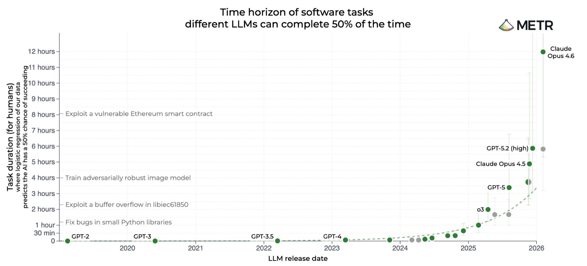
Hva er egentlig en språkmodell?
- Gir en sannsynlighet for hvert mulig neste ord
- Trenes på store mengder tekst og bilder
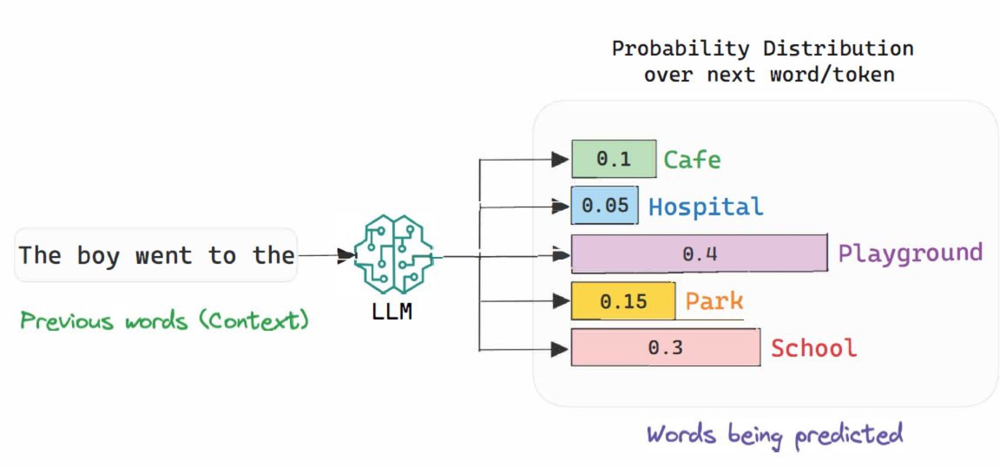
De fire knaggene på språkmodeller
Data: hva trener vi på?
- Hele internett - bøker, kode, forum, artikler, bilder
- Kvalitetsinnhold prioriteres (Lovtekster > Kvinneguiden)
- Egne datasett kan fintrene modellen til spesifikke oppgaver
- Modellprodusentene lager nye, syntetiske datasett
- Datasett vi vet svarene på men ikke veien:
- “Når holdes AI kurset til JUS?”
Modell: en sannsynlighet over neste ord
\[P(w_3 = \text{"gøy"} \mid \text{"Juss er"};\, \theta)\]
- Samme byggekloss som i bolk 1
- En klassifiseringsmodell der hver kategori er ett ord
- “Neste ord gitt forrige ord”, med noen ukjente parametere \(\theta\)
- Forskjellen: mange flere parametere (100+ milliarder)
- Modellarkitektur/struktur: transformer (fra 2017)
Samme prinsipp, bare mye, mye større
Hvordan modellen lærer
Endring av parametere
1. Next-token prediction
Modellen ser tekst, prøver å gjette neste ord. Korrigeres på avvik.
2. Reinforcement learning
Modellen genererer flere svar - vi premierer det beste (gjør det mer sannsynlig).
- Automatisk hvis svaret er kjent (verifiser)
- Menneske hvis vanskelig å måle
Endring av prompten (parametere ligger fast)
3. Bedre instruksjoner
Vær mer presis i selve prompten - rolle, format, hva som er viktig.
4. Few-shot prompting
Gi modellen noen eksempler rett i prompten. Den “lærer” mønsteret uten retrening.
5. Tool use
Modellen kaller verktøy: <tool: websearch, q: "...">. Svaret kommer tilbake i tekstflyten.
Tool use er det som låser opp agenter
Bruk: AI-agenter
En agent er en språkmodell med verktøy
- Modellen kan kalle verktøy: e-post, kalender, websøk, kode, BankID
- Appen rundt språkmodeller plukker opp at språkmodellen har kalt et verktøy, gjør kommandoen og returnerer svarer som ren tekst
- Deretter kaller man LLMen som da har infoen den trenger
Eksempel: en app på en uke
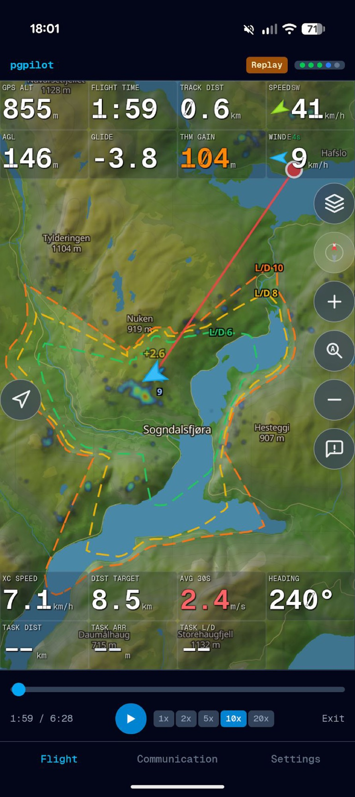
- Paragliderapp du bruker mens du flyr
- Kart, høyde, venners posisjon, kommunikasjon, +++
- Første brukbare version: en uke med kodeagent
- Live-testet i lufta over Colombia
…også en personvernsgjennomgang av samme app
- Publisere app: Google og Apple klaget på manglende privacy policy
- Privacy policy er et tverrfaglig minefelt
- Stor kodebase og masse lover..?
- Avsjekk etterpå
- Tror dette ble bedre
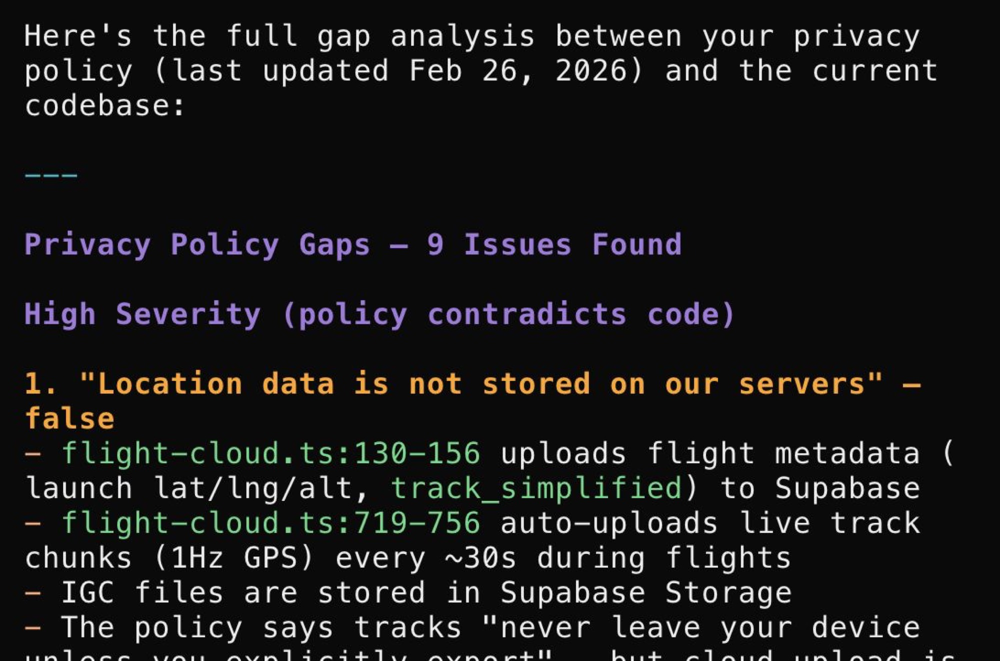
Flere eksempler
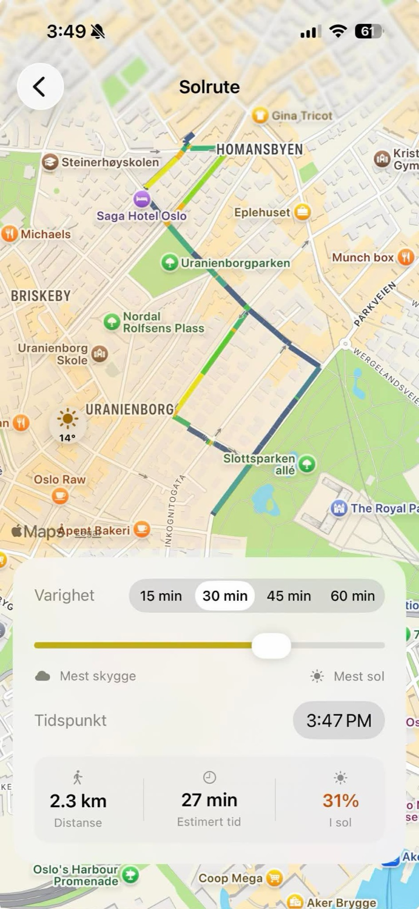
“Toget har gått”
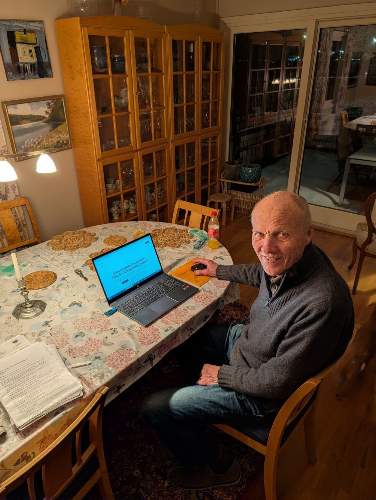
- Farfar Kjartan, 86
- Sluttet å kode i 1974
- Uferdig prosjekt fra Raufoss Våpenfabrikk
- Plukket opp igjen - med Claude som hjelper
- Koder COBOL, et språk knapt noen kan lenger
En dødelig treenighet
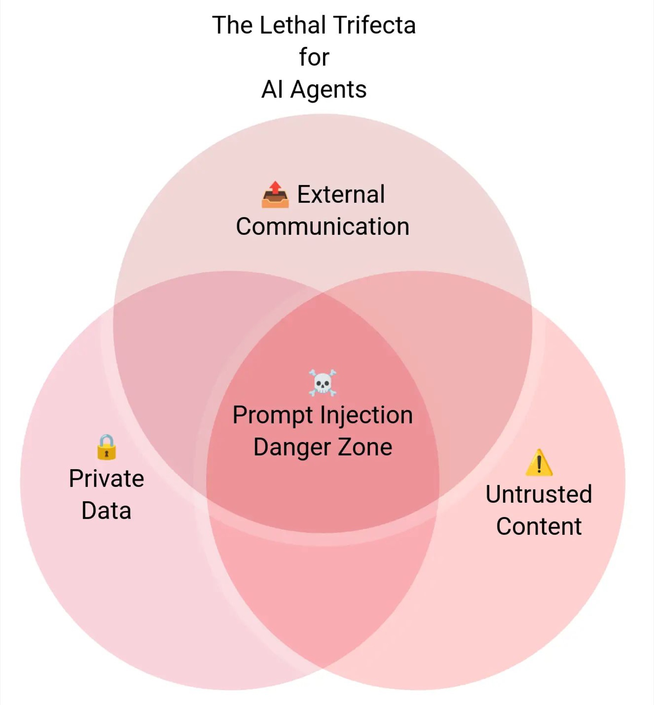
- LLM-en kan ikke skille instruksjoner fra innhold
- Hvis agenten har:
- Privat data
- Mottar untrusted innhold (web, e-post)
- Kan kommunisere utad
- …kan ondsinnet tekst hijacke handlingene
Oppsummering: de fire knaggene
| Knagg | Hva gjør den? | Klassisk ML | Språkmodell | Juridiske problemstillinger |
|---|---|---|---|---|
| Data | Observasjoner vi kan lære av | Tabell med rader | Internett + kvalitetskilder | Personopplysninger, opphavsrett, dataminimering, "GDPR", .. |
| Modell | En antakelse om strukturen i verden | $P(y \mid x)$ | $P(\text{neste ord} \mid \text{tidligere ord})$ | Forklarbarhet, dokumentasjonsplikt, ... |
| Trening | Lære modellen hvordan verden er | Maximum likelihood | Next-token + RL + tool use + prompt | Valideringskrav, testing på separate data, overfitting, monitorering |
| Handling | Hva vi gjør med prediksjonen | Argmax, top-K, threshold | Agenter med verktøykall | Diskriminering, automatiserte beslutninger, feedback loop, ... |
Workshop: Bygg en LLM-klassifiserer
Lær en språkmodell å lese terms of service
- Datasett: LegalBench
unfair_tos(Stanford) - Klausuler fra Spotify, Netflix, eBay, Facebook
- Klassifiser hver som
fairellerunfair - Tre steg:
- Zero-shot - bare instruksjon
- Few-shot - legg til 10 ferdig-klassifiserte eksempler
- Sammenlign accuracy
Vi “trener” modellen ved å legge til data i prompten - samme prinsipp som når vi trener en AI-modell
Diskusjon
Takk for meg!